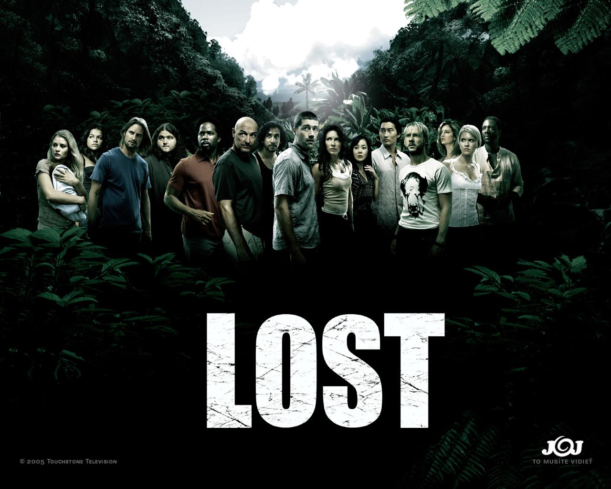
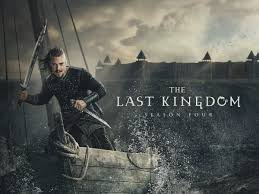

5: Lost
Ratings : 🌟 8.3
Genre :AdventureDramaFantasy
Seasons : 6
Episodes : 118
Air-Date : September 22, 2004
Watch-Time : 43 min.(Per Ep.)
Synopsis:
The past, present, and future lives of surviving Oceanic Flight 815 passengers are dramatically intertwined as a fight for survival ensues in a quest for answers after crashlanding on a mysterious island. Each discovery prompts yet more secrets, as the hastily-formed colony search for a way off the island, or is this their home?
4: Into the Badlands
Ratings : 🌟 8.0
Genre : ActionAdventureDrama
Seasons : 3
Episodes : 32
Air-Date : November 15, 2015
Watch-Time : 42 min.(Per Ep.)
Synopsis:
Regent Sunny, a highly-skilled fighter and the deadliest "Head Clipper" for Baron Quinn battles the Nomads to rescue a mysterious boy named M.K. who harbors a dark secret about his past. But when he brings him back to The Fort to train as a "Colt", a Clipper-in-training, things quickly get out of hand with another trainee. When first blood is drawn, M.K. loses control of himself as if something takes over his body, making the boy valuable to an opposing baron, The Widow. Meanwhile, Sunny discovers M.K.'s pendant has the same image as the one on his childhood compass of a place called Azra, the boy's home. In order to seek out the truth about his own past, Sunny wants to know more of this city beyond the Badlands, and must find a way out, especially now that his lover Veil is illegally pregnant with his child.
3: The Last Kingdom
Ratings : 🌟 8.4
Genre : ActionAdventureDrama
Seasons : 5
Episodes : 37
Air-Date : 10 October 2015
Watch-Time : 60 min.(Per Ep.)
Synopsis:
The year is 872, and many of the separate kingdoms of what we now know as England have fallen to the invading Danes, leaving the great kingdom of Wessex standing alone and defiant under the command of King Alfred. Against this turbulent backdrop lives our hero, Uhtred. Born the son of a Saxon nobleman, he is captured by the Danes and raised as one of their own. Forced to choose between the country of his birth and the people of his upbringing, his loyalties are ever tested. What is he? Saxon or Dane? On a quest to reclaim his birthright, Uhtred must tread a dangerous path between both sides if he is to play his part in the birth of a new nation and, ultimately, recapture his ancestral lands...
2: Vikings

Ratings : 🌟 8.5
Genre : ActionAdventureDrama
Seasons : 6
Episodes : 93
Air-Date : March 3, 2013
Watch-Time : 44 min.(Per Ep.)
Synopsis:
The adventures of a Ragnar Lothbrok: the greatest hero of his age. The series tells the saga of Ragnar's band of Viking brothers and his family as he rises to become King of the Viking tribes. As well as being a fearless warrior, Ragnar embodies the Norse traditions of devotion to the gods: legend has it that he was a direct descendant of Odin, the god of war and warriors.
1: Game of Thrones
Ratings : 🌟 9.3
Genre : ActionAdventureDrama
Seasons : 8
Episodes : 73
Air-Date : April 17, 2011
Watch-Time : 57 min.(Per Ep.)
Synopsis:
Game of Thrones is roughly based on the storylines of the A Song of Ice and Fire book series by George R. R. Martin, set in the fictional Seven Kingdoms of Westeros and the continent of Essos. The series utilizes several simultaneous plot lines. The first story arc follows a dynastic conflict among competing claimants for succession to the Iron Throne of the Seven Kingdoms, with other noble families fighting for independence from the throne. The second covers the exiled scion's actions to reclaim the throne; the third chronicles the threat of the impending winter, as well as the legendary creatures and fierce peoples of the North. Showrunner David Benioff jokingly suggested "The Sopranos in Middle-earth" as Game of Thrones' tagline, referring to its intrigue-filled plot and dark tone in a fantasy setting of magic and dragons.